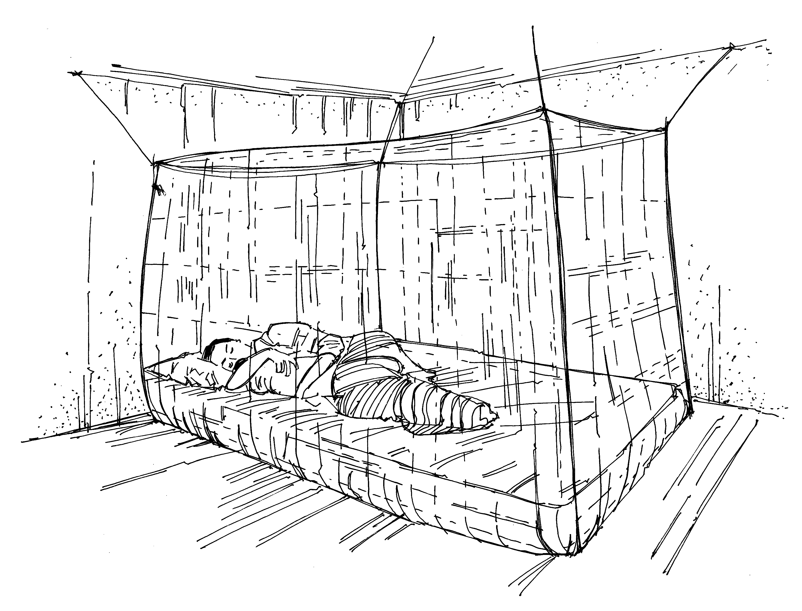

Les moustiquaires contribuent de manière notable à éviter les maladies transmises par les moustiques, comme le paludisme.
Ce que vous devez savoir
Les moustiquaires constituent un des moyens principaux de se protéger contre le paludisme et les autres maladies véhiculées par les moustiques.
Les moustiquaires les plus efficaces sont imprégnées d’un insecticide à longue durée d’action (qui tue les moustiques).
Ces moustiquaires sont actives pendant 3 à 5 ans.
Pour être efficaces, les moustiquaires doivent être utilisées correctement.
Comment utiliser correctement une moustiquaire imprégnée
Accrocher la moustiquaire au-dessus du couchage.
S’assurer que les bords de la moustiquaire sont glissés sous le matelas ou la natte pour empêcher les moustiques d’entrer.
Laisser la moustiquaire fermée pendant la nuit et pendant la journée quand il n’y a personne dessous.
Le lavage de la moustiquaire peut éliminer l’insecticide. Respecter les instructions de lavage fournies avec la moustiquaire. Ne pas la laver trop souvent.
Réparer les déchirures de la moustiquaire.
Remplacer les moustiquaires à intervalles réguliers, conformément aux instructions (tous les 3 à 5 ans).

Une mère et son enfant sous une moustiquaire
Ce que vous pouvez faire
Encouragez tous les membres de la communauté à dormir sous des moustiquaires chaque nuit, tout particulièrement les enfants et les femmes enceintes.
Encouragez l’utilisation de moustiquaires imprégnées d’insecticide à longue durée d’action.
Assurez-vous qu’autant de membres de la communauté que possible disposent de moustiquaires.
Renseignez-vous pour savoir où se procurer les moustiquaires imprégnées, et aidez la section locale de votre Société nationale à les distribuer.
Montrez aux gens comment bien suspendre leur moustiquaire. Effectuez des visites à domicile pour les aider à accrocher leur moustiquaire et encouragez-les à l’utiliser.
Réalisez un suivi afin de vous assurer que les moustiquaires soient utilisées dans les habitations.
Si les gens n’utilisent pas leurs moustiquaires, cherchez à comprendre pourquoi.
Suivez les instructions au verso afin de vous assurer que les moustiquaires soient utilisées correctement.
Messages communautaires
Voir les messages de la communauté suivants pour soutenir moustiquaires: